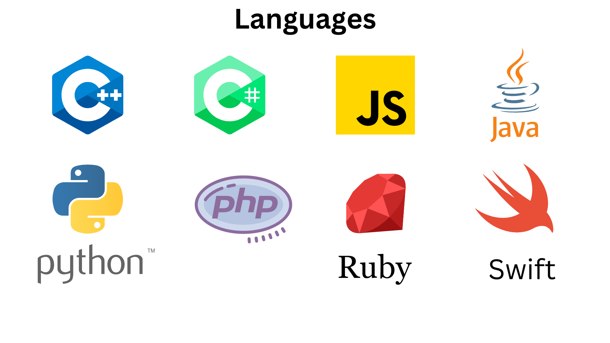

Projetos em:
Back-End
Front End

Seg / Sex - 08:00 às 18:00
55 11 99999-9999Av. Alegria do Senhor é a nossa força, 100, Paraiso - DS
muito feliz por você estar aqui. Este é um espaço criado com muito carinho para compartilhar informações, ideias e experiências com pessoas que, assim como eu, têm interesses em comum.
Navegue à vontade e sinta-se em casa. Aqui você encontrará conteúdos de qualidade, produzidos com muito cuidado e atenção aos detalhes. Além disso, estou sempre atualizando o site com novas páginas de curso que conclui, para que você possa estar sempre por dentro do meu portifolio
Se tiver alguma dúvida ou sugestão, não hesite em entrar em me contatar. Estou sempre aberta a ouvir nossos leitores e melhorar ainda mais a qualidade do meu conteúdo.
Mais uma vez, obrigado(a) por nos escolher. Espero que sua experiência aqui seja agradável e enriquecedora.
Sara é uma profissional comprometida e dedicada, sempre buscando novas maneiras de melhorar suas habilidades e ampliar seus conhecimentos.
Seu trabalho tem sido elogiado pelos colegas de equipe e pelos supervisores, que a consideram uma parte valiosa da equipe de desenvolvimento de software.
Quando não está trabalhando ou estudando, Sara gosta de passar seu tempo livre explorando novas tecnologias e desenvolvendo projetos pessoais.
Ela é uma grande entusiasta da comunidade de tecnologia em São Paulo e participa regularmente de encontros e eventos relacionados à sua área de atuação.
Com seu talento, dedicação e forte ética de trabalho, Sara tem um futuro brilhante pela frente.
Ela é uma das jovens promessas da cena de desenvolvimento de software em São Paulo e está pronta para enfrentar qualquer desafio que vier pela frente.
Um bom site deve ter um design atraente e profissional que seja agradável aos olhos dos visitantes. Isso inclui o uso adequado de cores, tipografia legível e uma organização visualmente agradável dos elementos na página.
Um site de qualidade deve fornecer conteúdo relevante e útil para os visitantes. Isso inclui informações claras sobre produtos, serviços ou qualquer outro assunto relacionado ao propósito do site. O conteúdo também deve ser atualizado regularmente para manter os visitantes engajados.
A navegação no site deve ser intuitiva e fácil de usar. Os visitantes devem conseguir encontrar facilmente as informações que procuram, com menus claros e uma estrutura lógica de páginas.
Com o aumento do uso de dispositivos móveis, um bom site deve ser responsivo, ou seja, se adaptar automaticamente a diferentes tamanhos de tela. Isso garante uma experiência consistente e fácil de usar, independentemente do dispositivo usado pelos visitantes.
Um site de qualidade deve carregar rapidamente, proporcionando uma experiência suave para os visitantes. Tempos de carregamento longos podem levar à frustração e fazer com que os visitantes abandonem o site.
A segurança é uma qualidade essencial de um site confiável. Um bom site deve implementar medidas de segurança para proteger os dados dos visitantes, como certificados SSL e práticas de criptografia. Além disso, é importante manter o site atualizado e protegido contra ameaças como malware e ataques cibernéticos.
Escolha o plano que combine com você